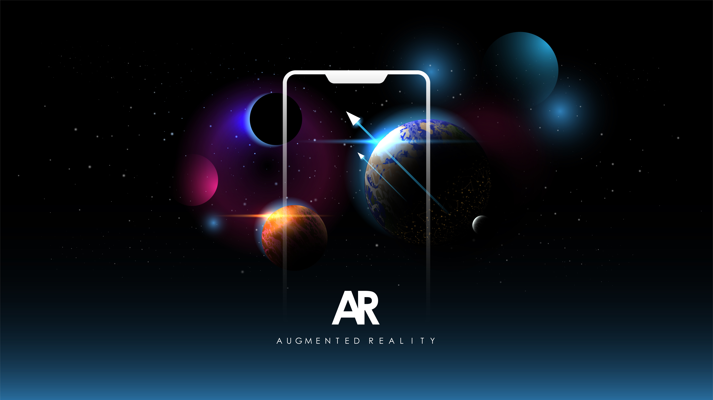

Colourblind AR
"Good design is accessible design."
- Don Norman (Author of The Design of Everyday Things)
📋 Project Overview ✏️
- Role: UX Researcher, Accessibility Analyst
- Methods: Mixed-methods research, usability testing, online questionnaires, semi-structured interviews, task completion analysis
- Deliverables: Literature review, usability testing report, research findings, accessibility recommendations
- Skills: User research, accessibility evaluation, data analysis, usability testing, survey design, comparative analysis, thematic analysis, qualitative coding, statistical analysis
- Tools: Microsoft Forms, SPSS, Microsoft Teams/Zoom, Microsoft Excel, Canva, Adobe Aero, Mendeley

In a world where technology should empower everyone, why do so many digital experiences exclude those with visual impairments? This question led me to explore how individuals with Colour Vision Deficiency (CVD) interact with Augmented Reality (AR) and how design can bridge the accessibility gap. Through human-centered research, I investigated how visual elements, patterns, and contrast impact user experience, aiming to make AR environments more inclusive for all users.
🔍Identifying the Challenge
- Through my research, I identified three key challenges in designing AR experiences for colourblind users:
- Colourblind users struggle to distinguish colours, affecting their ability to effectively use AR applications.
- Limited research exists on how colour blindness impacts AR usability and perception.
- Current accessibility guidelines (e.g., WCAG 2.1) do not fully address the unique challenges colourblind users face in AR environments.
- While task performance metrics showed minimal statistical differences, qualitative data highlighted significant usability challenges for colourblind users and even some non-colourblind users.
- Participants relied heavily on patterns when colour differentiation was unclear.
- Similar-coloured AR objects caused confusion and reduced task efficiency, even for some non-colourblind users in certain lighting conditions.
- Poor contrast and blending with real-world backgrounds further impacted visibility, making it difficult for both groups to differentiate AR elements.
- With these findings, I proposed practical accessibility enhancements such as patterns, textures, and adaptive UI elements to improve user experience and inclusivity.
- Pattern & Texture Integration: Using distinct textures and shapes to help users differentiate elements beyond colour.
- High-Contrast UI Adjustments: Enhancing contrast ratios between AR objects and backgrounds to improve visibility.
- Adaptive UI Elements: Allowing users to customize colour settings, enable assistive patterns, and adjust brightness levels.
- My research demonstrates that integrating accessibility best practices into design not only benefits people with disabilities but also enhances usability and inclusivity for all users.
- 👉 For a deeper dive into my findings, you can explore my full research presentation below.